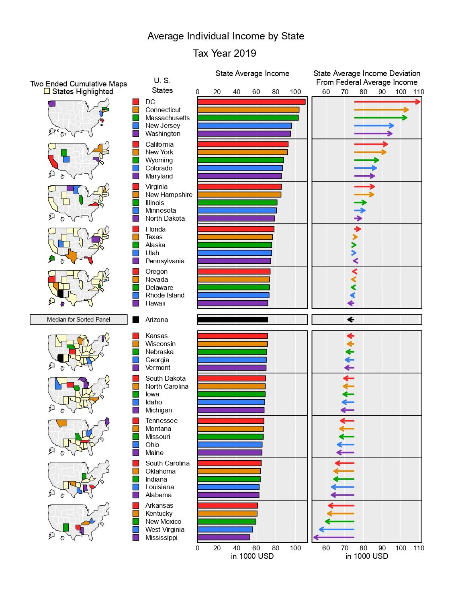
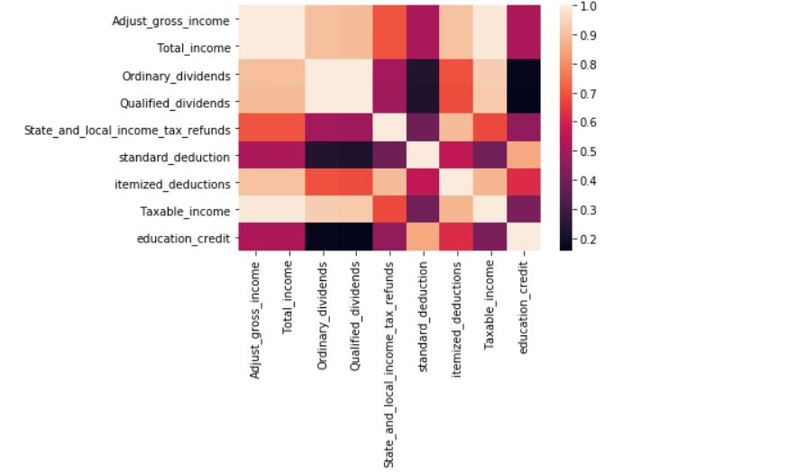

Exploring the incoming related to investment between different states in America
Photo by Kelly Sikkema on Unsplash
Taxes are the primary source of revenue for governments. Among other things, this money is spent to improve and maintain public infrastructure, fund public school, emergency services and welfare programs and national security or defense. (Kagan, 2021) Every year US Internal Revenue Service (IRS) collects data about Individual income tax return and this data contains relatively large numbers of columns which makes data collection process very expensive and difficult to do some data analysis like creating models. In this project we will visualize the data, figure out the correlation and relationship between some attributes and, we will create a model for prediction purpose. This data analysis benefits government officials to report and make projections and researchers in making policies and research taxpayer compliance and administration.

Photo by Olga DeLawrence on Unsplash
Individual income tax return data at the state and ZIP code level is collected by US Internal Revenue Service (IRS). The Internal Revenue Service (IRS) is a U.S. government agency responsible for the collection of taxes and enforcement of tax laws (such as the wash sale rule).1 Established in 1862 by then-President Abraham Lincoln, the agency operates under the authority of the U.S. Department of the Treasury, and its primary purpose is the collection of individual income taxes and employment taxes. The IRS also handles corporate, gift, excise, and estate taxes. (Segal, 2021)

Photo by AbsolutVision on Unsplash
Why did they collect the data (purpose)?
To make projections
Ø To research taxpayer compliance and administration.
Ø To help in the development of national income accounts.
IRS tax US residents to benefit people including building roads and bridges or provide basic utility for US residents. The IRS also collects how much taxpayers pay and how much they can be deducted from the government. The nature of the data is from the filled in form from the taxpayers. Individual tax statistics data are numerical and discrete. The IRS provides data for the tax result each year. The individual tax statistics data are a very detailed category for each tax element. Too many variables means the outcome can be overlooked and need much time to research. Individual tax statistics only provide the number of taxpayers in each state. There are no names or details of each person with their tax payment. Privacy and quality are accurate and easy to read.

Photo by Mika Baumeister on Unsplash
In this project we are trying to answer the following questions.
1. Visualize Adjusted gross income at state level
2. Calculate and visualize the correlation between different data in ISR data
In this project, Tableau is used for map-based visualization. R is used for initial descriptive statistics and correlation analysis. The IRS data separate data into states and level of income of the people. IRS data needs to pre-process and grouped data into each state in order to process.
The size of Individual income tax return data at the state and ZIP code level contains over 165k records and 126 attributes which shows the data contains every single detail about individual tax return, but this large size is somehow difficult to do some analysis like creating a model or clustering. Since the data has 126 columns it is difficult and visually less appealing to put the exact description of each column therefore this description was represented by some variables. Most of the attributes are in numbers about the detail of the tax income and expense, as example, total income, education expenses.

California is the largest in America. In 2019, California had 70133090 people and a total income of 300 million. The mean of the people in each state is 477495821 and the mean of the total income is 45741752. For more detail about the descriptive statistics, you can click here
There is the US population for each state. As we see, the highest population in America is CA. Californa popluation is a lot higher than other states.
1. Visualize Adjusted gross income at state level

DC the capital has the highest income per person at United States. Californa come in seacond. The middle east states has the lowest income.
2. Calculate and visualize the correlation between different data in ISR data

Total income adjust, and adjust gross income has strong correlation which is higher than 0.8. Total income, dividends and deductions have not much correlation which is around 0.5. The interesting thing is dividends and deduction has the lowest correlation of all the data tested.